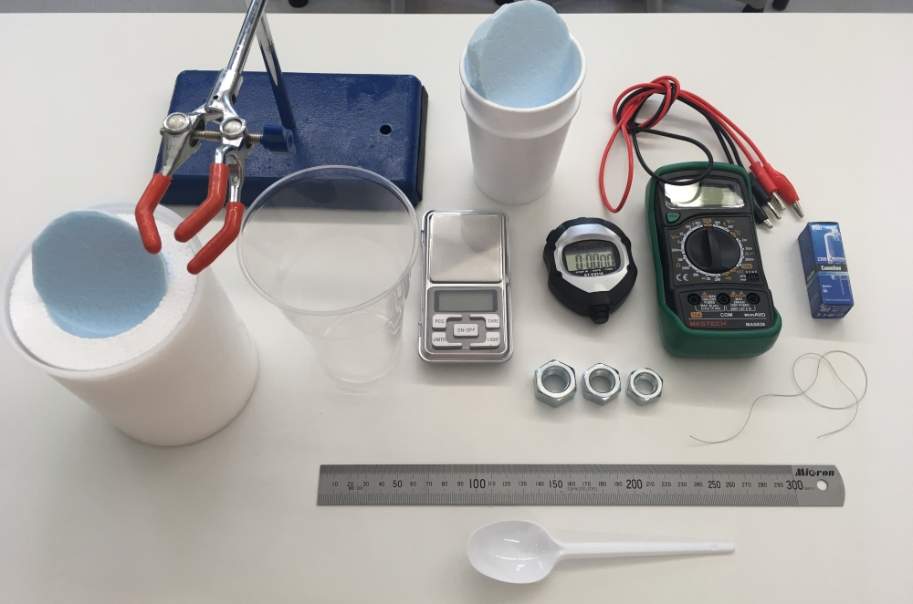
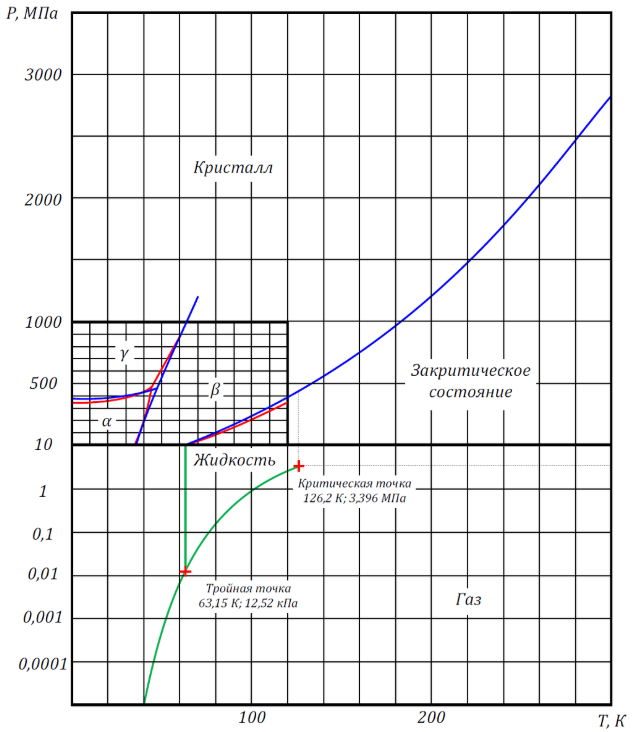

X20 (2020) — English translation
The main results of this work are of an evaluative nature and therefore an assessment of errors need not be made.
In this experimental work, you will explore some of the properties of liquid nitrogen, as well as the behavior of substances at low temperatures (down to the boiling point of liquid nitrogen). To complete the work you may need the following equipment (see picture):

two glasses made of foam polystyrene with a heat-insulating lid (you can pour water and nitrogen into them); thick-walled foam cup with a lid (thermostat) for liquid nitrogen; water, ice (on request); liquid nitrogen (on demand); steel nuts of different weights; electronic scales; digital stopwatch; multimeter with wires; halogen incandescent lamp with tungsten filament; tripod with foot; a plastic glass for draining used water; plastic spoon; paper towels or napkins (upon request); threads; ruler; calipers, scissors (on request).
Liquid nitrogen is a cryogenic liquid: at atmospheric pressure, the boiling point of liquid nitrogen is about $-196~^\circ\mathrm{C}$! Nitrogen poured into a foam plastic cup (thermostat) evaporates due to heat exchange with the environment through the walls of the thermostat, and its mass decreases at a certain rate. If, to carry out the necessary measurements, a sample (nut, halogen lamp) is immersed in nitrogen, the initial temperature of which is significantly higher than the temperature of liquid nitrogen, then rapid boiling will begin, which will continue until the sample is cooled to the boiling point of nitrogen. A sign of completion of the sample cooling process can be a short-term release of some additional portion of nitrogen gas from the thermostat. This is due to the disappearance of the gaseous layer between the cooling sample and liquid nitrogen. Do not forget that during and after cooling the sample, nitrogen also evaporates due to heat supply through the walls of the thermostat.
Be especially careful when working with liquid nitrogen!
Avoid contact of liquid nitrogen with exposed parts of the body and clothing!
Upon request, liquid nitrogen will be dispensed to you no more than twice in a volume of no more than 100 ml at a time. Nitrogen is dispensed within 5 minutes of request. The nitrogen is dispensed into your thick-walled Styrofoam cup.
Water density: $\rho_0 = 1~\text{г/cm}^3$; Specific heat of melting of ice: $\lambda_0 = 334~\text{Дж/г}$; Universal gas constant: $R = 8.31~\text{Дж/(моль}\cdot{К})$; Avogadro's number: $N_A = 6.02\cdot 10^{23}~\text{моль}^{-1}$; Molar mass of molecular nitrogen ($N_2$): $\mu_N = 28~\text{г/моль}$; Molar mass of air: $\mu_\text{в} = 29~\text{г/моль}$; Molar mass of iron: $\mu_{Fe} = 56~\text{г/моль}$; Gas kinetic diameter of air molecules: $d \sim 3\cdot 10^{-8}~cm$; Boiling point of liquid nitrogen at normal pressure: $T_N = 77.4~\text{К}$; Normal atmospheric pressure: $P_0 = 0.1013~\text{МПа}$; Nitrogen triple point: $T_\text{тр} = 63.15~\text{К}, P_\text{тр} = 12.53~\text{кПа}$. The figure below shows the complete $(T,P)$ phase diagram of nitrogen:

You may also need the temperature and barometric pressure in the room where you are conducting the experiment: barometric pressure today $P_\text{атм} = 760~\text{мм. рт. ст.}$ ($\text{1 mm. рт. ст.} \approx 133~\text{Па}$); room temperature $t_\text{комн} = 24~^\circ\mathrm{C}$.
Pour liquid nitrogen into the thermostat, cover it with a lid and place it on the scale (there should be such an amount of nitrogen that the scale does not go off scale).
It is known that the temperature $T$ of the 1st order phase transition (melting, boiling) depends on the external pressure $P$. This dependence is expressed by the Clapeyron-Clausius formula, which determines the angle of inclination of the tangent at each point of the equilibrium curve of two phases on the phase $(T,P)$-diagram (see Fig.): $$\frac{dP}{dT} = \frac{q_{12}}{T(v_2 – v_1)},$$ где $q_{12}$ — удельная теплота фазового перехода $1\rightarrow 2$, $v_1$ и $v_2$ - specific volumes phases 1 and 2, respectively.
If at room temperatures (and above) the heat capacity of a solid is a practically constant value, then at low temperatures there is a strong dependence of the heat capacity on temperature, and at absolute zero, as is known, the heat capacity of all bodies tends to zero. According to Einstein’s model, which works well in practice, the temperature dependence of the molar heat capacity of a body can be represented as: $$C(T)=3R\,\left(\frac{\Theta_\text{Э}}{T}\right)^2\frac{e^{\Theta_\text{Э}/T}}{\left(e^{\Theta_\text{Э}/T}-1\right)^2}$$, где $\Theta_\text{E}$ - Einstein’s characteristic temperature is different for different bodies. Typically the Einstein temperature is several hundred kelvins.
The heat flow through a flat wall of thickness $\delta$ for the stationary case is determined by Fourier’s law of thermal conductivity: $$j = - \kappa \frac{\Delta T}{\delta}$$, где $j$ — плотность мощности теплового потока (поток тепла в единицу времени через единичную перпендикулярную площадку), $\Delta T$ — перепад температур, $\kappa$ is the thermal conductivity coefficient of the substance (in our case, foam plastic).
To complete the tasks of this paragraph, you may need some characteristics of the halogen incandescent lamp with G4 base available in your equipment: operating voltage of the lamp: $U = 220~\text{В}$; rated lamp power: $W = 35~\text{Вт}$; filament temperature in operating mode: $T_\text{р} \approx 3000~^\circ\mathrm{C}$.
It is known that the resistance of metals in a fairly wide temperature range varies according to a linear law: $R(t) = R_0(1 + \alpha t)$, where $R_0$ is the resistance at temperature $0~^\circ\mathrm{C}$, $\alpha$ is the temperature coefficient of resistance, $t$ is the temperature on the Celsius scale.
Source: https://pho.rs/p/18